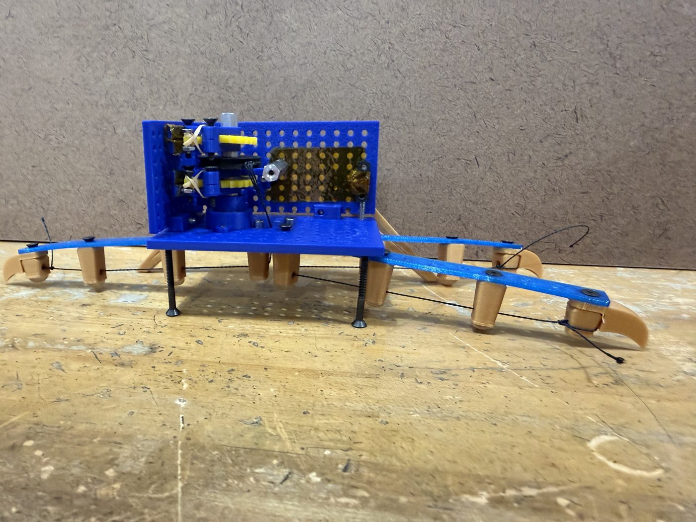

Project C.L.A.W.S.: a zero-power perching claw
Small drones fly about 30 minutes, mostly because hovering burns power. This claw lets a quadcopter grab a railing or pipe and hold on with 0.0 W, then release on command using shape memory alloy (SMA, Nitinol) actuators instead of heavy servos.
 Actuation video
Actuation video
Two prototypes



We built two designs. The blue prototype exposed the inside of the device for the expo and ran without Nitinol because of the NDA. The black prototype was the working version shown in the video.
 Design evolution: four pivots
Design evolution: four pivots
- Reverse-scissor linkage won our weighted decision matrix (196 of 280, ranked 1st). Early prints showed multiple bearing pivots created parasitic friction, and the rigid jaws could not adapt to branches. We dropped it.
- Prototype A: pre-stressed TPU claw. A curled TPU band closes by default, so power loss means a safe grip. Kevlar tendons open it. It needed 5.8 N to open one claw and held pipes 25-100 mm. It failed above 100 mm, and above a 45 degree perch angle with more than 1.13 kg (11.1 N) the payload rolled off.
- Fix: rigid inverted V legs with grip tape and protruding bolt talons moved overturning loads into a rigid frame.
- Final: dual ratchet lever arm on a 1/4 inch 6061 hex shaft, laser-cut acrylic ratchet gears, and holding pawls. SMA only releases the pawls, so holding costs no power.


Test data: SMA behavior
| Current setting | Result |
|---|---|
| 1.5 A, 1.04 V | Under-actuation, incomplete displacement |
| 2.0 A, 1.36 V (about 2.7 W) | Nominal: reliably lifted 170 g (1.76 N) |
| 2.25 A, 1.59 V (about 3.6 W) | Failure: overheated, permanent deformation |
Power vs. actuation speed was linear, and 3.6 W was the upper limit before this geometry lost its shape memory. We sized power for the array: 12.0 A at 1.36 V is 16.32 W peak, 489.6 J per perch-and-takeoff cycle, 7,344 J per hour at 15 cycles, so an 8,000 J battery target.
Constraints I designed around
- Strain limit: SMA recovers only about 4%, but opening the claw needed a 5.08 cm tendon stroke, so the actuator needs large mechanical amplification (bow actuator or bell-crank).
- Slow cooling sets cycle time, so the claw defaults closed and SMA only releases.
- Heat: SMA runs near 90 C, so mounts use heat-resistant tape and vented housings.
- Modularity: a 1/4 inch grid of 4-40 screw holes lets pawl mounts, bearings, and SMA anchors move without new machining.
My contributions
I led planning and sponsor communication, built the specification sheet and weighted decision matrix, designed the mounting, linkage, and actuation options for the morphological chart, and wrote and built Prototype A.